The Trail - Day 1
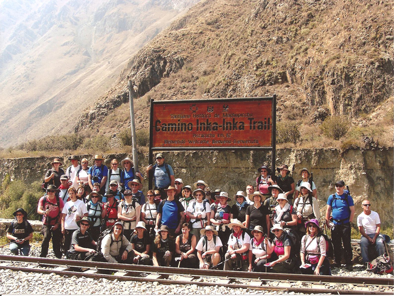
An early transfer to the shabby market town of Ollantaytambo which had the feel of a real 'frontier' town - not helped by the fact that the main road was being dug up ...
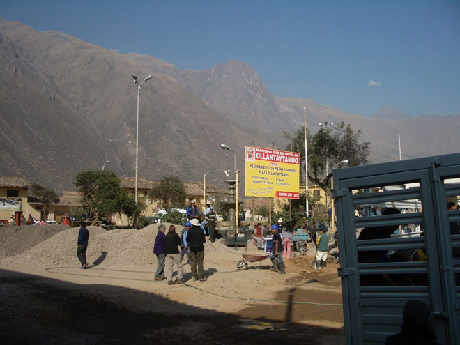
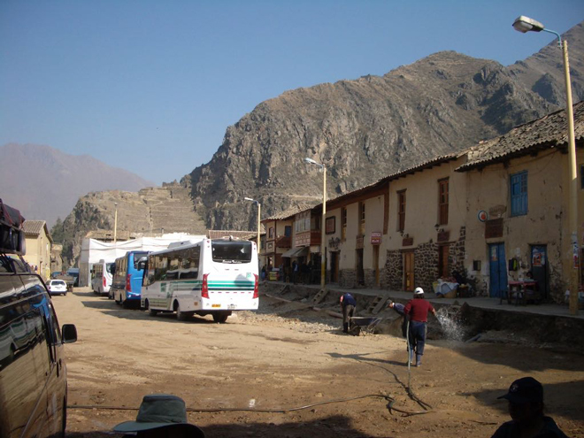
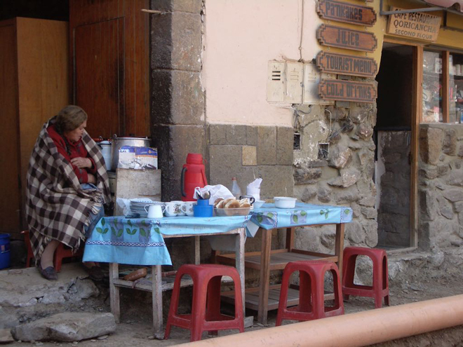
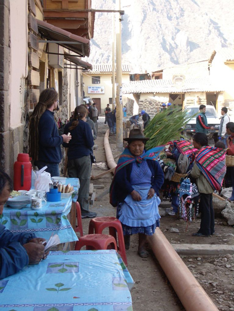
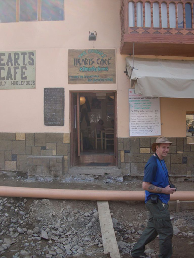
And then onto where the trek begins at an altitude of 2,500m. We collected our bags which we had to carry - the porters could only carry 8kg of our stuff, since they also had to carry their own luggage AND the tents, cooking equipment, toilets, chairs etc etc ... .
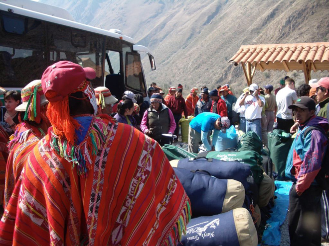
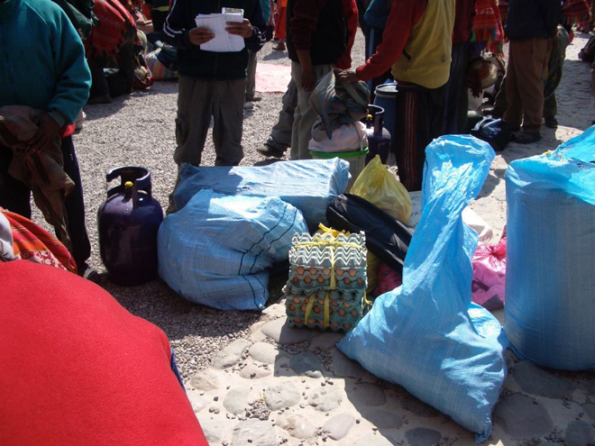
.
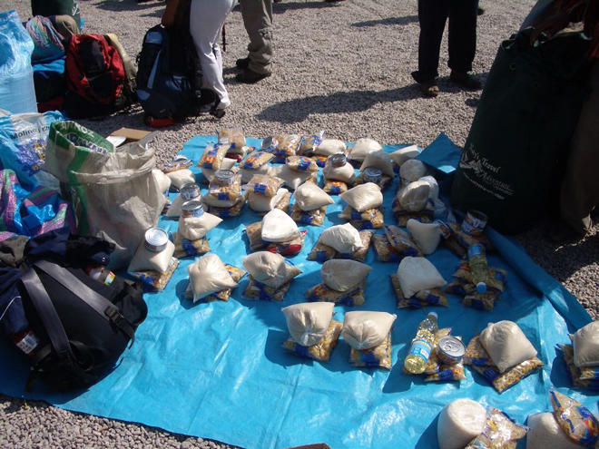
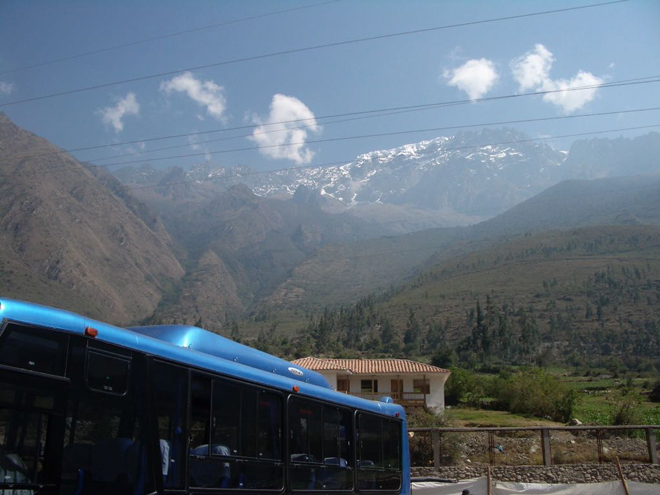
After registering for the trail we trekked for two hours to the first lunch stop overlooking the Llaqtapata ruins.
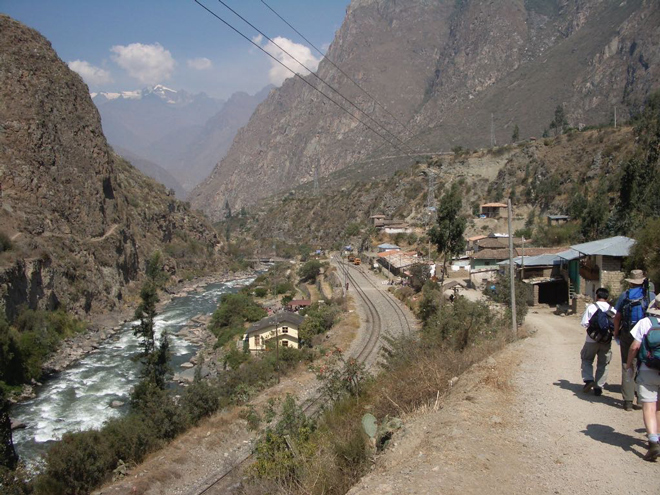
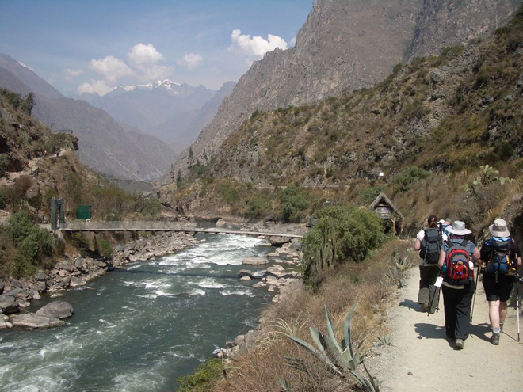
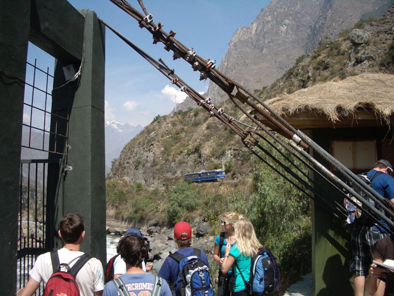
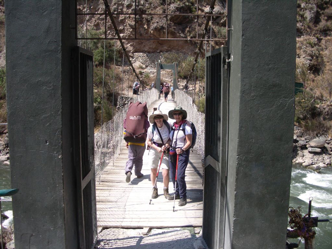
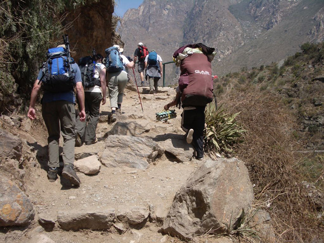
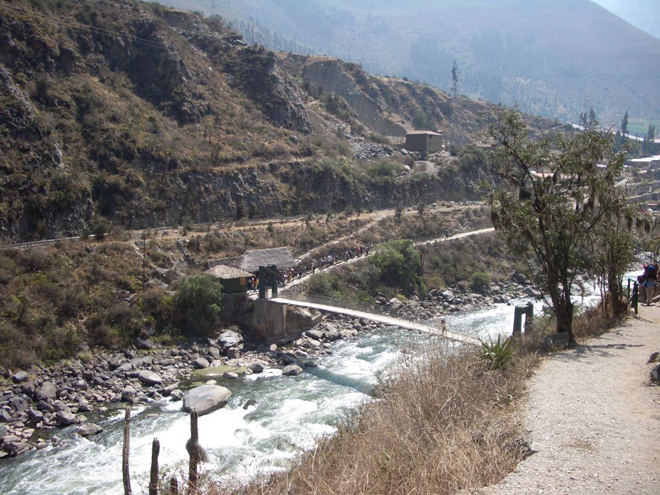
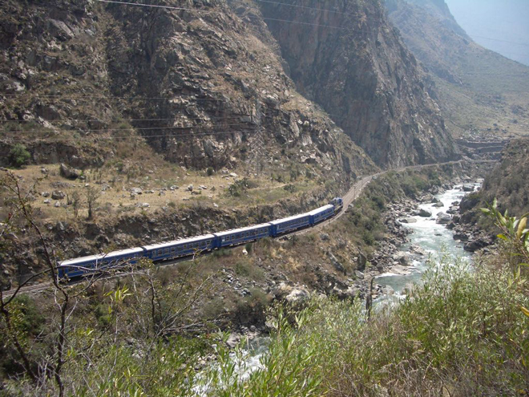
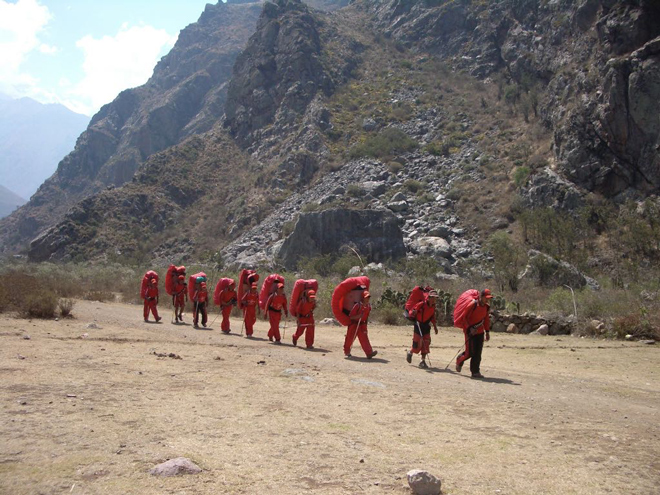
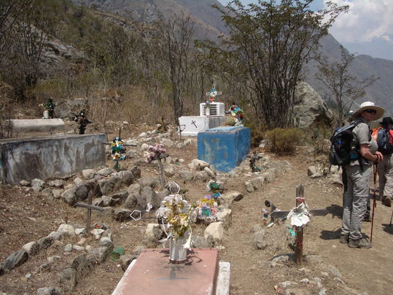
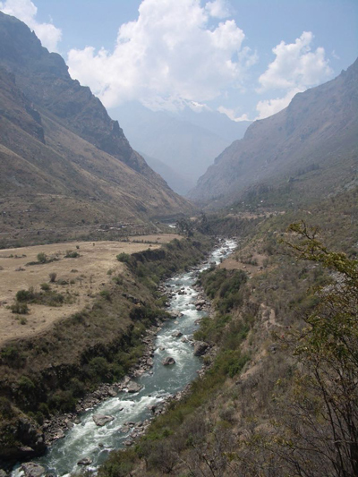
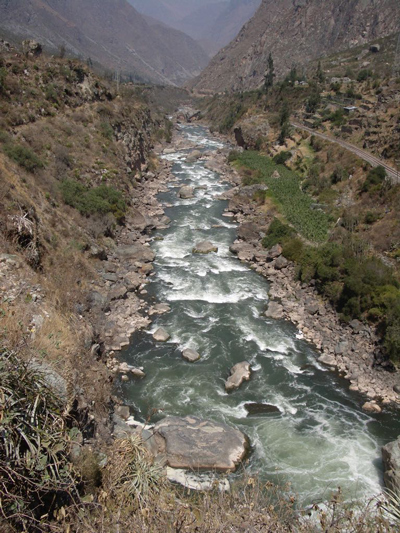
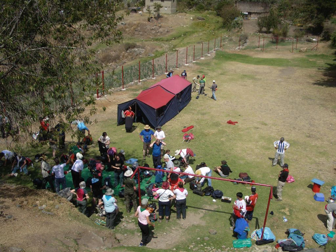
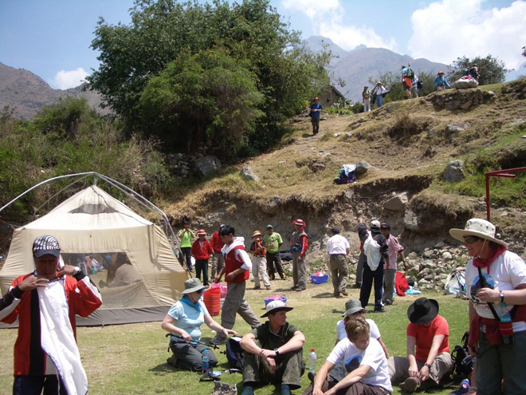
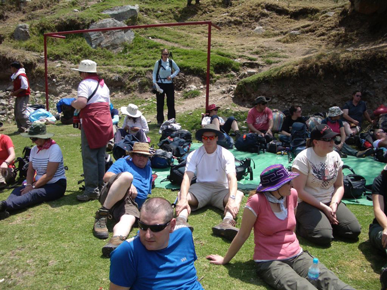
Our porters had marched ahead and set camp for lunch - tents, tables, chairs and bowls of water for washing hands after a sweaty morning's route march. The food (featuring lots of quinoa) was surprisingly tasty.
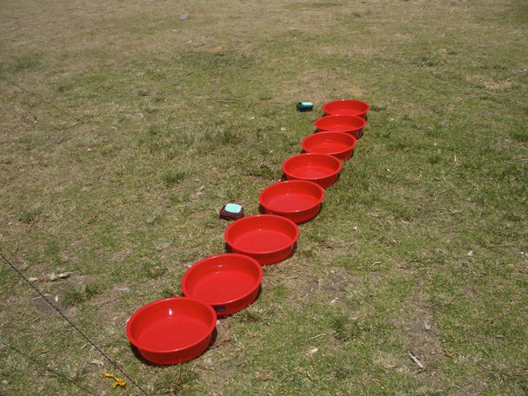
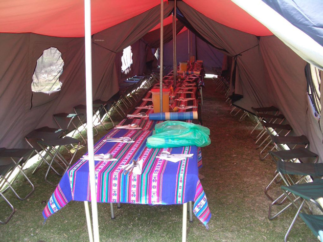
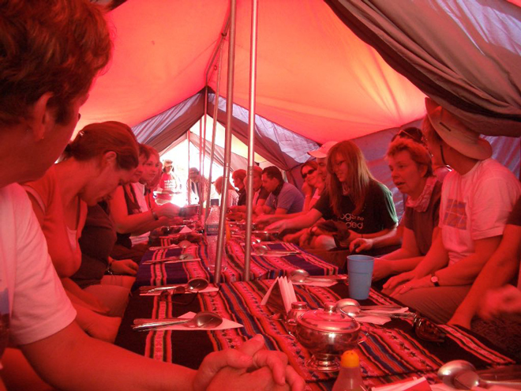
Then another two hours to the overnight camp close to Huayllabamba village at 3,000m.
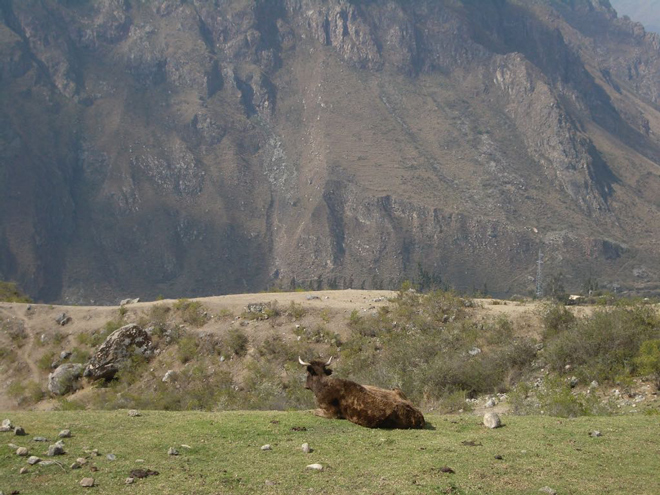
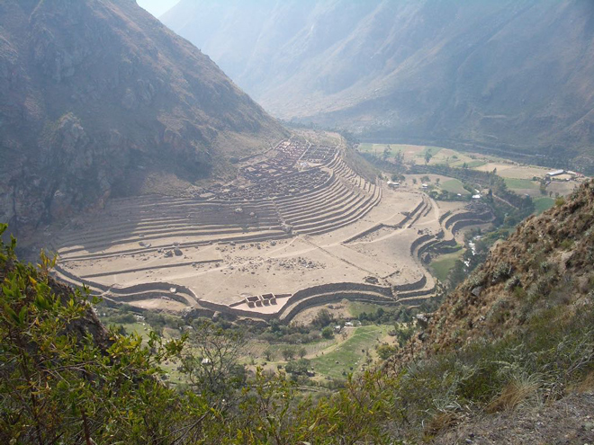
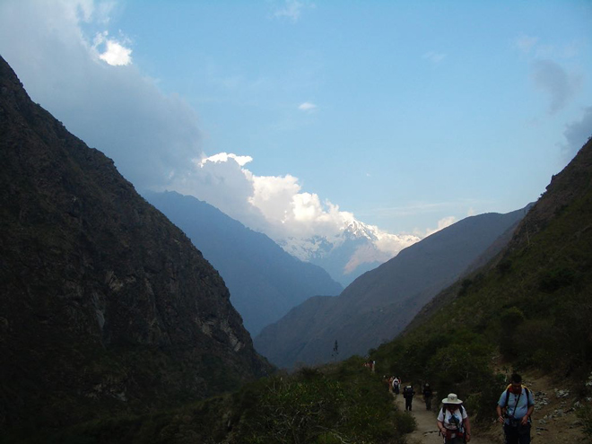
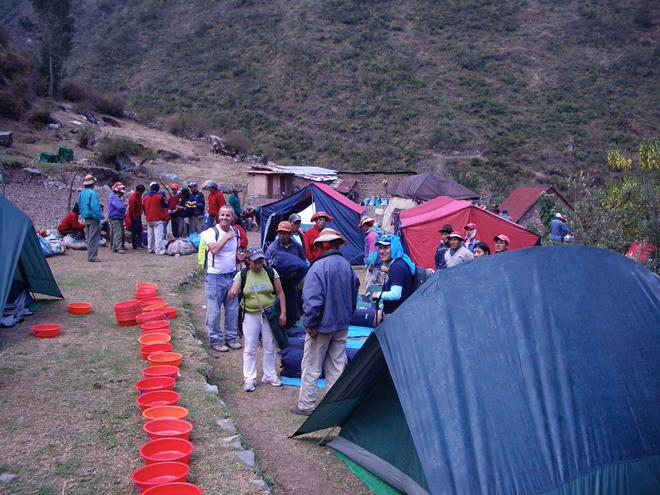
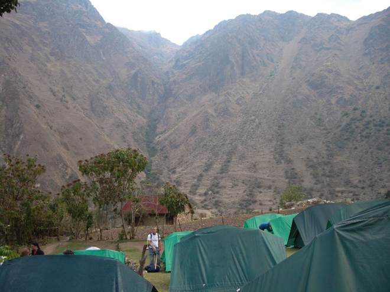
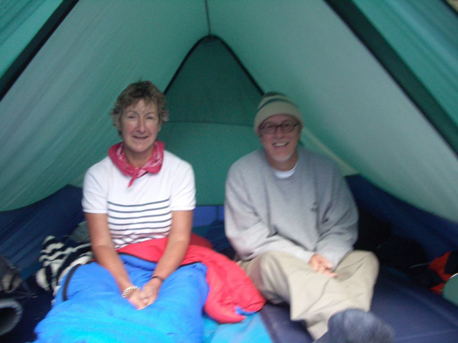